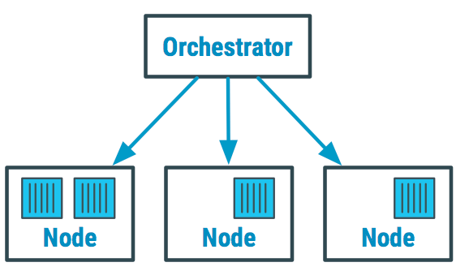

Kubernetes – Průvodce a přehled
Přehled základních pojmů, principů a doporučení pro práci s Kubernetes.

Co je Kubernetes?
Kubernetes je orchestrátor kontejnerů pro automatizované nasazování, správu, škálování a aktualizaci aplikací.
Hlavní přínosy:
- Efektivně využívá kapacitu serverů.
- Dynamicky spouští nové verze a zastavuje staré.
- Automaticky reaguje na selhání (restart kontejnerů).
- Klíčový nástroj pro správu microservices architektur.
Important
Pro práci s Kubernetes je předpokládána znalost Dockeru.
Základní pojmy
| Pojem | Popis |
|---|---|
| Kontejner | Izolovaná jednotka aplikace se svými závislostmi |
| Pod | Nejmenší nasaditelná jednotka – obsahuje jeden nebo více kontejnerů |
| Service | Abstrakce pro přístup ke skupině Podů; zajišťuje síťovou komunikaci |
| Deployment | Definuje, kolik Podů má běžet a jak se aktualizují |
| Cluster | Skupina serverů (nodes), na kterých Kubernetes běží a spravuje kontejnery |
| Node | Jednotlivý server v Kubernetes clusteru |
| Namespace | Logická izolace zdrojů v rámci jednoho clusteru |
Co dělá orchestrátor?
Orchestrátor je software, který automaticky řídí celý životní cyklus kontejnerizovaných aplikací:
- Rozhoduje, na kterém serveru kontejner poběží.
- Restartuje kontejnery při selhání.
- Škáluje počet instancí podle zátěže.
- Aktualizuje verze bez výpadku (rolling update).
Note
Manuální správa stovek kontejnerů na více serverech je prakticky nemožná bez orchestrátoru.
Kubernetes a microservices
Kubernetes se nejčastěji používá s architekturou microservices – aplikace je rozdělena na nezávislé služby komunikující přes API.
